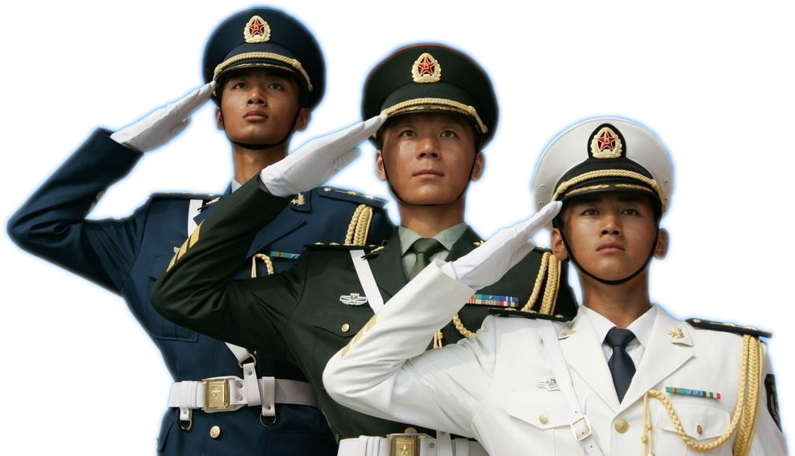

建军90周年武器大揭秘
建军90周年阅兵仪式上共有护旗方队、纪念标识梯队和陆上作战、信息作战、特种作战、防空反导、海上作战、空中作战、综合保障、反恐维稳、战略打击等9个作战群。祖国越来越强大，武器更是多种多样，有一些武器还没有展出，下面我们来看一下我感兴趣的武器吧！
●首先上场的当然是威名远扬的歼-20隐形战斗机！
歼-20是一款单座双发动机并具备高隐身性、高态势感知、高机动性等能力的第五代战斗机，有着革命性的战场优势。知道它是怎么隐形的吗，是因为它涂上了一种特制的化学液体，使得雷达无法检测到，是不是特别厉害！
●接下来登场的是大家鲜有耳闻的运-8电子干扰机 。
运-8电子干扰机的机头脖颈两侧部位是两个鼓出的雷达整流罩，该机安装的是与其配套的KZ800大型机载电子侦察系统，可以根据战场需要，及时对其进行相同频率相同波段的干扰。就算敌方有我们检测不到的隐形飞机，我们也可以用运-8电子干扰机对它进行干扰，让它不能悄悄溜进我们国内。
●然后，是举世瞩目的东风-26洲际导弹出场。
东风-26是中程弹道导弹，采用两级固体燃料火箭发动机；可携带重量为1.2吨至1.8吨的核弹头或常规弹头，并具备投送3个分导式多弹头能力；在射程方面，由于使用了高能推进剂，最大射程应该在5000公里以上。为什么说这颗导弹举世瞩目吗，因为它的威力实在是巨大，让许多国家为之羡慕。
●最后登场的是一台威力巨大的武器，那就是99A型主战坦克。
99A型主战坦克是中国首款“信息化坦克”，实现了战场态势共享、协同攻防、状态监测、系统重构等功能，使坦克演变为战场重要的信息节点，实现战车之间的相互协同以及单车乘员彼此间的信息共享。不仅如此，它还是建军90周年阅兵仪式上的保护盾，默默保护着全体人员的安全。
建军由来
红军历程
中国人民解放军诞生于 1927 年 8 月 1日。 1927.7-1937.7土地革命战争时期称中国工农红军，1937.7.7-1945.8.15 抗日战争时期称八路军和新四军， 从1945.8.16-1950.6解放战争时期起改称中国人民解放军。

上图为红军时期中央红军红四团部队冒着枪林弹雨飞夺泸定桥
上图为抗战时期狼牙山五壮士，战士们英勇抗敌，坚贞不屈。
上图为解放战争时期鲁西南战役，晋冀鲁豫野战军与国民党军交战。
中国人民解放军是中国共产党缔造和领导的全心全意为人民服务的人民军队。是中华人民共和国的武装力量。
红军服装演变史
1929年3月，中央红军红四军解放长汀后，赶制4000套军装。从此第一批正规的红军军装诞生，因需要经常在山地行军作战故颜色为灰色，每套有一幅裹腿和红五星军帽。
第一批红军军服
1938年1月6日，新四军军部在南昌成立。 新四军是抗日战争时期中国共产党领导的人民军队。全称国民革命军陆军新编第四军。八路军、新四军军服式样、颜色和用料，由于客观条件限制，不够统一，一般由各大战略区领率机关决定。多数部队沿用国民党军队的军服式样。颜色以黄、灰居多。用料以粗布为主。八路军军服多为土黄色，佩戴“八路”二字的长方形肩章。
改编后新四军军服
中国人民解放军军服是以1927年8月1日南昌起义时部队穿的国民革命军的服装而改装的，已经到2007年先后有七个版本的军服。现行的版本是07式。

现行的中国人民解放军军服
现行的中国人民解放军军服采用了大量新技术新材料和新工艺，品种设计更加完善配套，整体设计风格典雅质朴，款式造型更具时代特色，颜色更加协调庄重。
抗战胜利70周年&建军90周年阅兵精彩瞬间
为纪念中国人民解放军建军90周年的特殊日子，我特意挑选具有重大意义的抗战胜利70周年阅兵和建军90周年阅兵的精彩瞬间剪辑到一起，经历了八年抗战，走过了九十年的艰辛奋斗，砌起了九十年的深厚基石，我们中华儿女，再也不怕外敌的威胁，海陆空三军威力无敌，震慑四方！我为祖国自豪，我为中国人民解放军骄傲！
建军90周年武器大揭秘
建军90周年阅兵仪式上共有护旗方队、纪念标识梯队和陆上作战、信息作战、特种作战、防空反导、海上作战、空中作战、综合保障、反恐维稳、战略打击等9个作战群。祖国越来越强大，武器更是多种多样，有一些武器还没有展出，下面我们来看一下我感兴趣的武器吧！
●首先上场的当然是威名远扬的歼-20隐形战斗机！
歼-20是一款单座双发动机并具备高隐身性、高态势感知、高机动性等能力的第五代战斗机，有着革命性的战场优势。知道它是怎么隐形的吗，是因为它涂上了一种特制的化学液体，使得雷达无法检测到，是不是特别厉害！
●接下来登场的是大家鲜有耳闻的运-8电子干扰机 。
运-8电子干扰机的机头脖颈两侧部位是两个鼓出的雷达整流罩，该机安装的是与其配套的KZ800大型机载电子侦察系统，可以根据战场需要，及时对其进行相同频率相同波段的干扰。就算敌方有我们检测不到的隐形飞机，我们也可以用运-8电子干扰机对它进行干扰，让它不能悄悄溜进我们国内。
●然后，是举世瞩目的东风-26洲际导弹出场。
东风-26是中程弹道导弹，采用两级固体燃料火箭发动机；可携带重量为1.2吨至1.8吨的核弹头或常规弹头，并具备投送3个分导式多弹头能力；在射程方面，由于使用了高能推进剂，最大射程应该在5000公里以上。为什么说这颗导弹举世瞩目吗，因为它的威力实在是巨大，让许多国家为之羡慕。
●最后登场的是一台威力巨大的武器，那就是99A型主战坦克。
99A型主战坦克是中国首款“信息化坦克”，实现了战场态势共享、协同攻防、状态监测、系统重构等功能，使坦克演变为战场重要的信息节点，实现战车之间的相互协同以及单车乘员彼此间的信息共享。不仅如此，它还是建军90周年阅兵仪式上的保护盾，默默保护着全体人员的安全。